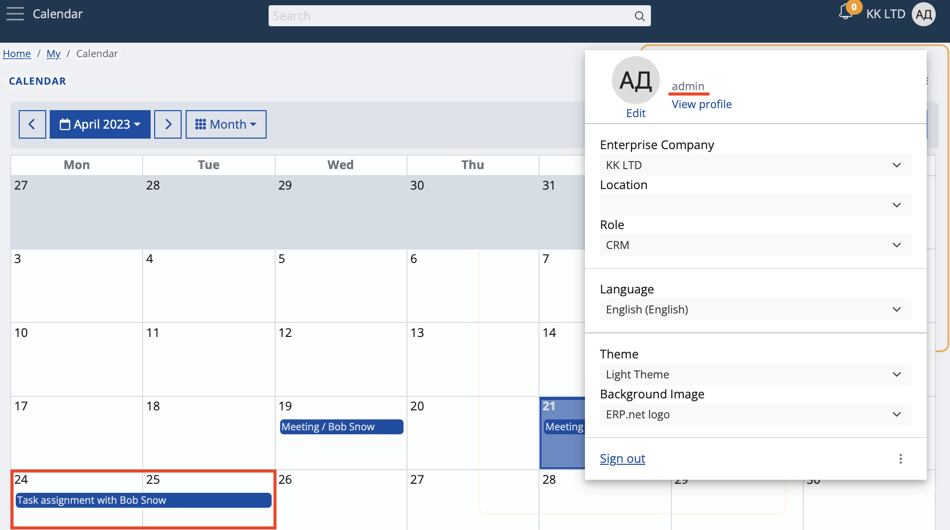
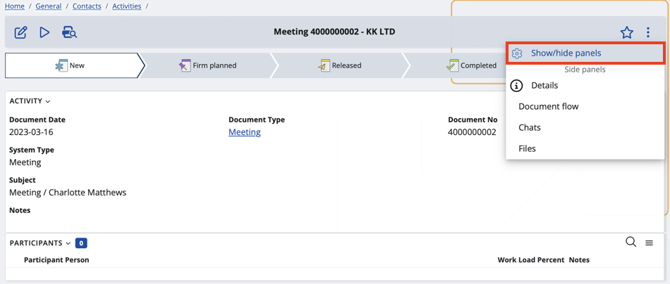
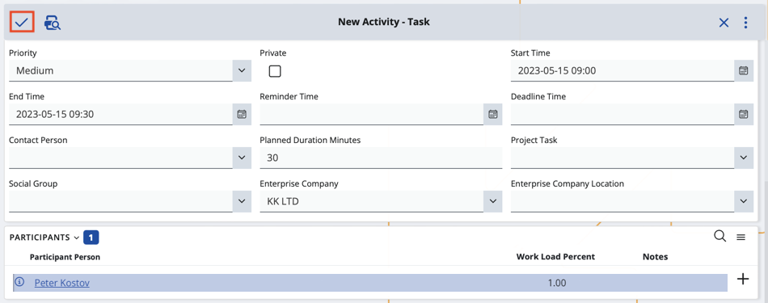

Activity participants
Your Calendar is capable of displaying both the activities that you own and the ones you participate in.
This allows for better task management and increases the level of interaction you can achieve on the My Calendar application.
How it works
By default, whenever owners create a new activity, related participants have it automatically added in their own calendars.

Process
Any user, including yourself, can view and access a task, meeting, or other forms of activities they're scheduled to take part in.
- Schedule a new activity directly from My Calendar.
If the Participants panel is absent, enable it through the Show/Hide panels button.

- Add the participant(s) you need and then finish the creation of the activity.

The participant will now be able to see and access it from within their own My Calendar application.
Note
If you’re both an owner and a participant of the same activity, you won’t get a duplicate of it in your Calendar. The same is true if you're accidentally added more than once in the activity.